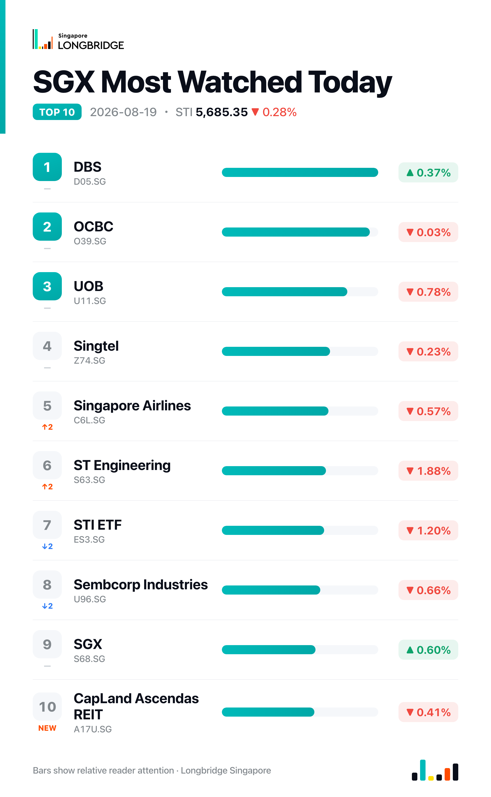

STI Falls 0.28% to 5,685.35 as Early Slide Narrows; UOL Rebounds While Banks Diverge
The Straits Times Index closed at 5,685.35 on Wednesday, down 16.05 points, or 0.28%, after opening about 0.8% lower and slipping as far as 5,643.17 before clawing back most of that decline through the session; the close sat within seven points of the day's high of 5,692.62. Decliners led advancers 18 to 8 among the benchmark's 30 constituents, with four unchanged, as banking and property-linked names accounted for most of the day's weakest performers even as a handful of counters, led by UOL, moved higher.
The early weakness traced to a soft regional handoff: following an overnight pullback on Wall Street, the Hang Seng Index opened down 0.8% on Wednesday and the STI opened at a similar discount near 5,655.72, with ST Engineering, Keppel DC Reit and OCBC among the first constituents to fall. The index recovered roughly two-thirds of that opening loss as the session progressed, even as the three local banks moved in different directions into the close and property-linked counters stayed under pressure.
Session Movers
UOL Group (U14.SG, +2.72%) was the strongest performer among Wednesday's movers, snapping a slide that had run through most of the past week. The advance follows an Aug. 12 disclosure that first-half net profit rose 23% year-on-year on higher fair-value gains, alongside a new 50-50 joint venture with Kheng Leong to develop a residential site known as Geranium; DBS and CGS International both reiterated Buy calls on the stock on Aug. 14, at S$13.00 and S$12.83 targets respectively. UOL trades at 0.647 times book — cheaper than roughly 62% of its past year — with a consensus target of S$12.00 implying about 27% upside.
Thai Beverage (Y92.SG, -2.13%) was the weakest performer among Wednesday's movers, a day after its Chang HK unit set up a new China marketing subsidiary, Chang Guangzhou, with CNY 1 million in registered capital — a move the company said would not materially affect full-year earnings or net tangible assets. That followed nine-month results reported last week showing EBITDA up 7.2% to S$1.9 billion even as group revenue slipped 1.8%, with stronger beer and spirits margins offsetting weaker volumes. DBS has maintained a Buy rating on the stock, and the broader consensus target of S$0.50 implies about 9% upside; shares trade at 11.92 times earnings, roughly at their three-year median.
ST Engineering (S63.SG, -1.88%) was among the session's weakest constituents, giving back part of the gain built since its Aug. 13 first-half results, when net profit rose 27% year-on-year to S$512 million on stronger urban-solutions and aerospace demand alongside a S$35.7 billion order book that includes a UK defence contract. Phillip Securities and DBS both reiterated Buy ratings on Aug. 17, at S$13.00 and S$12.40 targets respectively. The stock now trades at 60.8 times earnings, above its own five-year high of 34.01 times and cheaper than just 9% of the period, with a consensus target of S$11.57 implying roughly 6% upside.
Singapore Exchange (S68.SG, +0.6%) recovered part of Tuesday's 1.92% pullback, still supported by the July trading update disclosed Aug. 14, which showed securities turnover up 37% year-on-year to S$46.2 billion, daily average value above S$2 billion for a sixth straight month, and derivatives volume up 16%. The operator has also said it is exploring an expanded ETF lineup, including potential single-stock products. SGX trades at 38.27 times earnings — a decade high, cheaper than just 1.6% of the past 10 years — with a consensus Hold rating and a S$24.00 target implying about 4.6% downside.

One point worth noting
The three local banks broke from Tuesday's rare synchronized decline: DBS added 0.37%, the session's only gainer among the trio, while OCBC finished flat and UOB fell 0.78%. The trio has now moved in the same direction on only four sessions since Aug. 5 — Wednesday's split a return to the more typical pattern.
This recap is for informational purposes only and does not constitute investment advice.